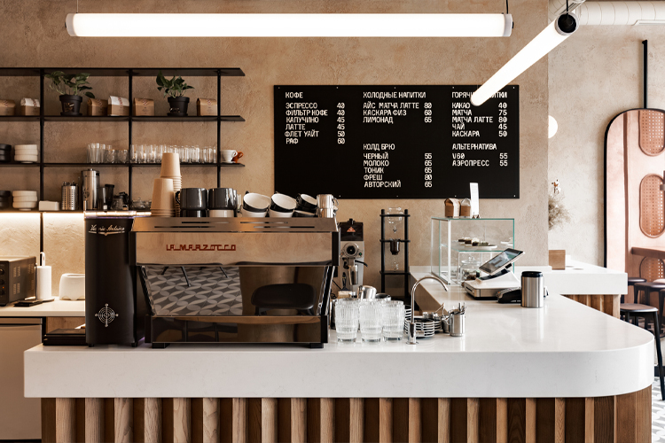
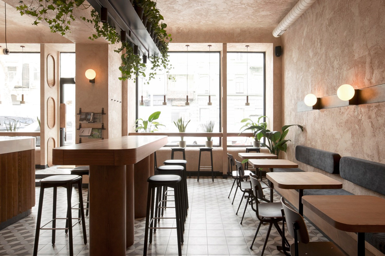
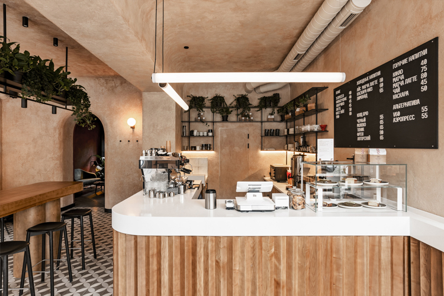

Donde la pasión por el café se encuentra con la exquisitez de los sabores.
Nuestro acogedor rincón es el lugar perfecto para disfrutar de una experiencia de café única. Desde el aroma tentador hasta la cuidadosa preparación de cada taza, en CafeDelicias nos enorgullece servir a nuestros clientes el café de la más alta calidad.